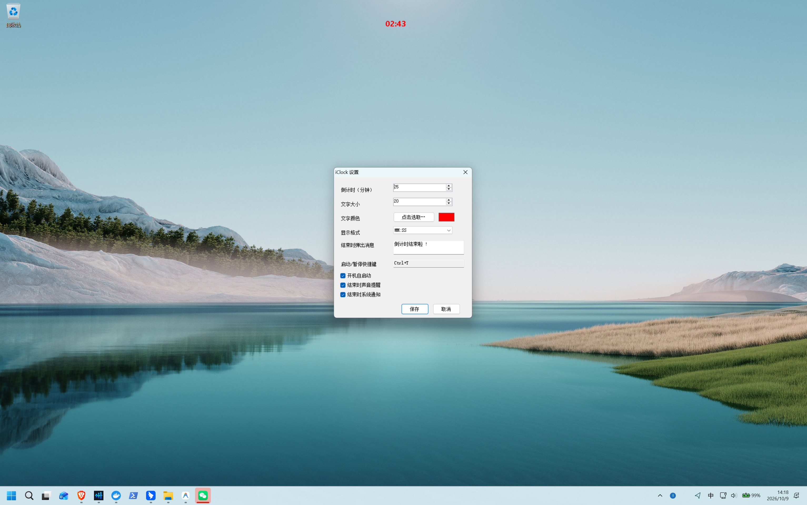
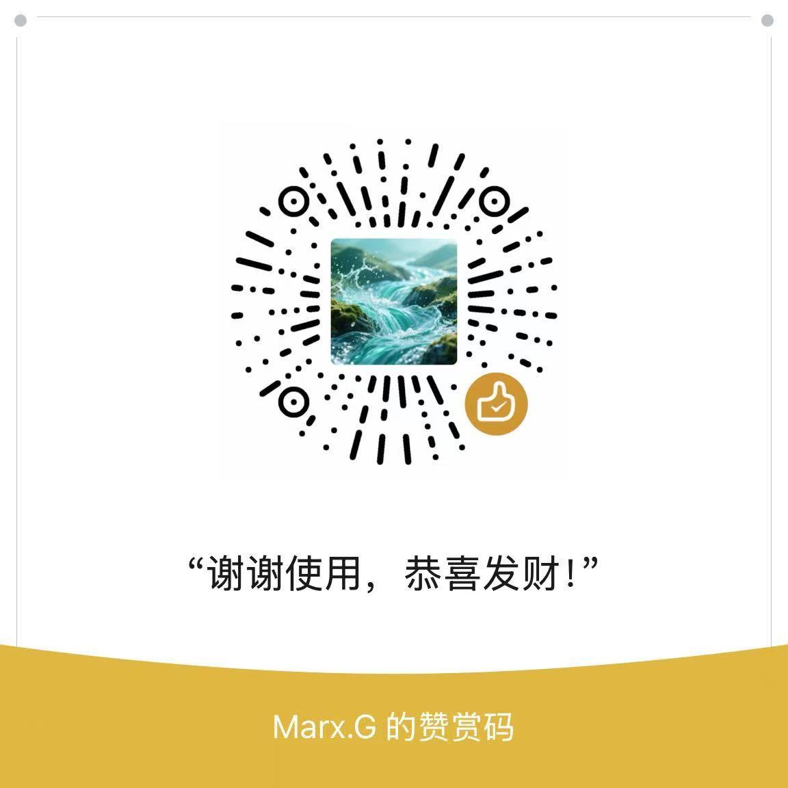

拒绝动辄百兆的臃肿软件。iClock 是为心流专注而生的原生悬浮计时利器，体积仅 126 KB，零常驻负担，支持全局热键一键启停。

每一个像素都经过严苛考量，剔除一切无用噱头，保留最纯粹的工作流体验。
支持自由调整文字半透明背景与屏幕坐标。调整完毕后文字纯净浮现，绝不阻挡后方窗口的正常点击操作。
默认快捷键 Ctrl+Shift+T，无论您在全屏写代码、游戏还是 PPT 演讲，无须切换窗口即可一键启停。
内置 HH:MM:SS、MM:SS 及中文时间单位；支持字体大小平滑调节与系统调色板任意选色，完美融入各类壁纸风格。
倒计时归零时弹出 TopMost 顶层视窗与超时累计秒数，配合提示音效，即使沉浸工作中也绝不错过重要节点。
静默将当天每次倒计时的开始时间、时长与结果（完成/重置/中断）归档至标准 TSV 文本，便于日常个人效能复盘。
支持简体中文与 English 原生切换。冷启动后台无感探测最新版本，发现新版仅轻量提醒，绝不弹窗强制打扰。
不论是团队汇报还是个人深潜，iClock 都能在角落静默护航。
汇报时无感挂在投影或屏幕边角，清晰掌控演讲进度，告别时间超时窘境。
25 分钟番茄心流冲刺，无需频繁查看手机，抬头即见剩余时间，保持思维不掉线。
全局快捷键随时唤醒，监控 Boss 刷新或技能冷却周期，全屏画面穿透不穿帮。
紧盯盘面波动，分秒必争。醒目置顶在行情走势图上方，精准把控挂单节奏。
看一看真正的原生开发与市面常见方案的代差对比。
| 核心维度 | iClock (本项目) | 主流 Electron 计时工具 | 网页版在线计时器 | 手机自带倒计时 |
|---|---|---|---|---|
| 可执行体积 | ~126 KB (单文件) | 120 MB ~ 250 MB | 每次加载数 MB | 无法投射至电脑 |
| 内存开销 | < 15 MB 静态占用 | 180 MB ~ 400 MB | 浏览器额外占内存 | 不占电脑内存 |
| 置顶与穿透 | ✔ 支持置顶+点击穿透 | 部分支持置顶，穿透繁琐 | ✘ 必须维持浏览器前置 | ✘ 无法贴合电脑屏幕 |
| 全局快捷键 | ✔ 任意窗口秒级启停 | 部分受限 | ✘ 需切换至标签页 | ✘ 需手动触碰手机 |
| 纯净度与隐私 | ✔ 0 广告、无常驻遥测 | 常见开机常驻广告 | 常见网页插播广告 | 易被手机通知打断 |
完全免费、绿色无捆绑。支持 Windows 7 SP1、Windows 8、Windows 10 及 Windows 11。
解答关于极简架构、置顶穿透体验与安全性的核心疑问
WS_EX_TRANSPARENT 原生 API，倒计时浮窗始终悬浮在桌面最顶层，但所有鼠标点击均直接穿透到下层应用（如代码编辑器、全屏游戏、PPT 播放），丝毫不干扰任何操作。
winget install FrancoDeyvison.iClock；Scoop 用户运行 scoop install https://raw.githubusercontent.com/francodeyvison183-collab/iClock/main/scoop/iclock.json 即可全自动下载、安装并配置环境变量。
iClock 是一款完全自由开源的项目。如果它切实提高了您的日常效率，欢迎赞赏支持作者持续迭代！

“谢谢使用，恭喜发财！” · 每一份鼓励都是持续打磨的动力